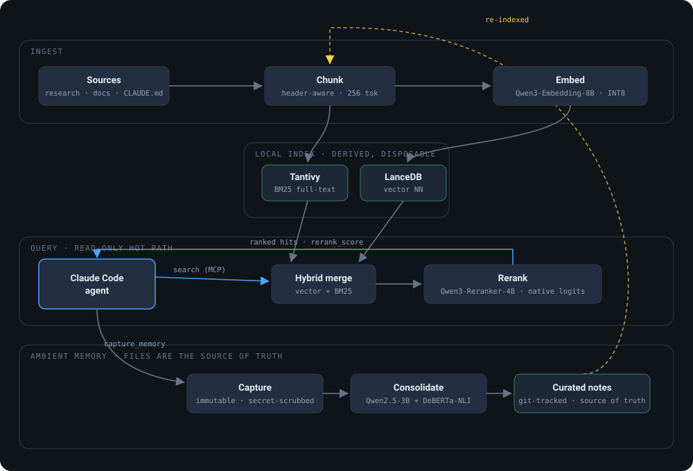

Retrieval that an agent acts on has to be right, not just plausible. mainframe-mcp treats that as an engineering problem with a number attached: every retrieval-affecting decision is settled by an in-repo eval harness with a regression gate, not by intuition. The architecture below is what that discipline produced.
The architecture

Four decisions that carry it
Rerank with the model's own logits
The reranker scores each candidate through a Qwen3-Reranker yes/no logit against a task instruction, the model-card method, not a bolted-on classification head. On the repo's eval that beat bge-reranker-v2-m3 by +26% composite / +33% hit@1. That swap wasn't a hunch; the harness made the call and it's reproducible from the repo.
Files are the source of truth; the index is disposable
Agents write immutable, secret-scrubbed session captures. A consolidation pass merges them into curated, git-tracked notes where newer facts supersede stale ones, with NLI-backed contradiction surfacing and anti-bloat guardrails. The vector index is derived from those files and can be thrown away and rebuilt; durability lives in git, not in a database.
A read-only hot path, hardened for ops
Search never mutates state. Ingestion does the writing: atomic manifest writes with crash recovery, index compaction and FTS refresh after each batch, poison-file-resilient syncs, path-traversal validation, and a layered secret-scrub denylist on every write path. The query an agent depends on can't corrupt the store it reads.
Measured, not vibed
An eval harness with a regression gate (evaluate.py --min-score), an experiment-log discipline, and a GPU-free test suite that runs in CI. The README's own graveyard (RAPTOR-in-index, RRF fusion, doc-prefix embedding, seq-cls reranker conversions) is a list of plausible ideas the harness killed. Retrieval leaderboards inverted against local measurement four separate times; the harness is the method, and you measure on your own corpus.
Why it's here
This is a small, honest example of the thing I do: design an AI system so its quality is observable and its failures turn into regression cases, then operate it. Same rigor, larger blast radius, is what I'd bring to an agent or evaluation platform. The multi-tier research orchestrator is the companion piece, the orchestration side of the same instinct.
Ken Faiman · Applied AI, agent & evaluation systems · source · faiman.com